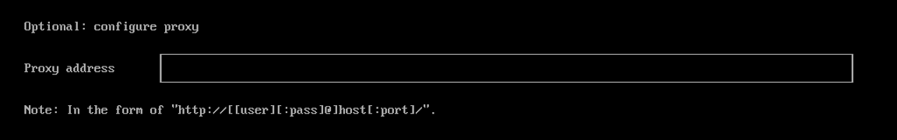

Installation ISO
SUSE Virtualization est livré sous forme d’image d’appliance amorçable, vous pouvez l’installer directement sur un serveur matériel sans système d’exploitation avec l’image ISO. Pour obtenir l’image ISO, téléchargez 💿 harvester-v1.x.x-amd64.iso depuis la page Releases.
Lors de l’installation, vous pouvez soit créer un nouveau cluster, soit joindre le nœud à un cluster existant.
La vidéo suivante montre un aperçu rapide d’une installation ISO.
Procédure d’installation
-
Montez le fichier ISO et démarrez le serveur en sélectionnant l’option
Harvester Installer.
L’installateur vérifie automatiquement le matériel et affiche des messages d’avertissement si les exigences minimales ne sont pas respectées. L’écran Vérifications matérielles n’est pas affiché si tous les contrôles sont réussis.

-
Utilisez les touches fléchées pour choisir un mode d’installation. Par défaut, le premier nœud sera le nœud de gestion du cluster.

-
Create a new Harvester cluster: crée un cluster entièrement nouveau. -
Join an existing Harvester cluster: rejoint un cluster existant. Vous avez besoin du VIP et du token du cluster que vous souhaitez rejoindre. -
Install Harvester binaries only: Si vous choisissez cette option, une configuration supplémentaire est requise après le premier démarrage.Lorsque trois nœuds sont présents, les deux autres nœuds ajoutés en premier sont automatiquement promus en nœuds de gestion pour former un cluster HA. Si vous souhaitez promouvoir des nœuds de gestion provenant de différentes zones, vous pouvez ajouter l’étiquette de nœud
topology.kubernetes.io/zonedans la configuration os.labels en fournissant une URL de fichier de configuration lors de l’étape de personnalisation de l’hôte. Dans ce cas, au moins trois zones différentes sont requises.
-
-
Choisissez un rôle pour le nœud. Vous devez effectuer cette étape si vous avez sélectionné le mode d’installation
Join an existing Harvester cluster.
-
Default Role: Permet à un nœud de fonctionner comme un nœud de gestion ou un nœud de travail. Ce rôle n’a pas de privilèges ou de restrictions spécifiques. -
Management Role: Permet à un nœud d’être priorisé lorsque SUSE Virtualization promeut des nœuds en nœuds de gestion. -
Witness Role: Restreint un nœud à être un nœud témoin (fonctionne uniquement comme un nœud etcd) dans un cluster spécifique. -
Worker Role: Restreint un nœud à être un nœud de travail (jamais promu en nœud de gestion) dans un cluster spécifique.
-
-
Configurez un mot de passe pour accéder au nœud. L’utilisateur SSH par défaut est
rancher.
-
Choisissez le disque d’installation sur lequel vous souhaitez installer le cluster et le disque de données sur lequel vous souhaitez stocker les données de la VM. Par défaut, SUSE Virtualization utilise le schéma de partitionnement Table de partition GUID (GPT) pour UEFI et BIOS. Si vous utilisez le démarrage BIOS, vous aurez alors l’option de sélectionner Secteur d’amorçage principal (MBR).
La prise en charge du démarrage BIOS hérité cessera d’être assurée à partir de la version 1.7.0 et sera supprimée dans une version ultérieure. Les clusters SUSE Virtualization existants qui utilisent ce mode de démarrage continueront de fonctionner, mais la mise à niveau vers des versions ultérieures peut nécessiter une réinstallation en mode UEFI. Pour éviter des problèmes et des interruptions, utilisez UEFI dans les nouvelles installations.

-
Installation disk: Le disque sur lequel installer le cluster. -
Data disk: Le disque pour stocker les données de la VM. Il est recommandé de choisir un disque séparé pour stocker les données de la VM. Cela ne s’applique pas aux nœuds témoins. -
Persistent size: Si vous n’avez qu’un seul disque ou si vous utilisez le même disque pour le système d’exploitation et les données de la VM, vous devez configurer la taille de la partition persistante pour stocker les paquets système et les images de conteneurs. La taille de partition persistante par défaut et minimale est de 150 GiB. Vous pouvez spécifier une taille comme 200Gi ou 153600Mi.
-
-
Configurez le
HostNamedu nœud.
-
Configurez l(es) interface(s) réseau pour le réseau de gestion. Par défaut, SUSE Virtualization crée une interface Bond nommée
mgmt-bopour le réseau de gestion intégré, et l’adresse IP peut être configurée via DHCP ou assignée statiquement.
Les commutateurs physiques connectés aux interfaces Bond doivent être configurés strictement en tant que ports de trunk. Ces ports doivent accepter le trafic étiqueté et envoyer le trafic étiqueté avec l’ID VLAN utilisé par le réseau VM.
Il n’est pas possible de changer l’IP du nœud tout au long du cycle de vie d’un cluster. Si vous utilisez DHCP, vous devez vous assurer que le serveur DHCP offre toujours la même IP pour le même nœud. Si l’IP du nœud est modifiée, le nœud concerné ne pourra pas rejoindre le cluster et pourrait même compromettre son fonctionnement.
De plus, vous devez ajouter l’option routeurs (
option routers) lors de la configuration du serveur DHCP. Cette option est utilisée pour ajouter la route par défaut sur l’hôte. Sans la route par défaut, le nœud échouera à démarrer.Par exemple :
Linux~ # ip route default via 192.168.122.1 dev mgmt-br proto dhcp
La valeur MTU par défaut de l’interface Bond est de
1500. Pour utiliser une valeur MTU différente, configurez le [install.management_interfaceparamètre dans un fichier de configuration Harvester selon l’étape suivante.Pour plus d’informations, voir Configuration du serveur DHCP.
-
(Optionnel) Configurez les CIDR pour les pods et services du cluster.
Pour utiliser les valeurs par défaut, laissez les champs vides.

Les valeurs CIDR ne doivent pas se chevaucher et doivent être dans la plage d’adresses IP privées de 10.0.0.0/8, 172.16.0.0/12 ou 192.168.0.0/16.
L’IP du service DNS doit être dans la plage définie par le champ CIDR de service.
Exemple d’une configuration CIDR valide :
-
CIDR de Pod : 172.16.0.0/16
-
CIDR de Service : 172.22.0.0/16
-
IP DNS de Cluster : 172.22.0.10
-
-
(Optionnel) Configurez le
DNS Servers. Utilisez des virgules comme délimiteur pour ajouter d’autres serveurs DNS. Laissez-le vide pour utiliser le serveur DNS par défaut.
-
Configurez l’IP virtuelle (VIP) en sélectionnant un
VIP Mode. Cette VIP est utilisée pour accéder au cluster ou pour que d’autres nœuds rejoignent le cluster.Pour la configuration DHCP avec des mappages d’adresses MAC à IP statiques configurés, entrez l’adresse MAC dans le champ fourni pour récupérer l’IP virtuelle persistante unique (VIP). Sinon, laissez-le vide.

-
Configurez le
Cluster token. Ce token est utilisé pour ajouter d’autres nœuds au cluster.
-
Configurez
NTP serverspour vous assurer que les heures de tous les nœuds sont synchronisées. Cela est défini par défaut sur0.suse.pool.ntp.org. Utilisez des virgules comme délimiteur pour ajouter d’autres serveurs NTP.
L’utilisation de plusieurs serveurs NTP offre une redondance, une meilleure précision, une tolérance aux pannes et des performances améliorées. Cela garantit que la synchronisation de l’heure continue même si un serveur échoue ou fournit des données incorrectes, et aide à répartir la charge entre différents serveurs.
-
(Optionnel) Si vous devez utiliser un proxy HTTP pour accéder au monde extérieur, entrez le
Proxy address. Sinon, laissez ceci vide.
-
(Optionnel) Vous pouvez choisir d’importer des clés SSH en fournissant
HTTP URL. Par exemple, vos clés publiques GitHubhttps://github.com/<username>.keyspeuvent être utilisées.
-
(Optionnel) Si vous devez personnaliser l’hôte avec un fichier de configuration, entrez le
HTTP URLici.
-
Examinez et confirmez vos options d’installation. Après avoir confirmé les options d’installation, SUSE Virtualization sera installé sur votre hôte. L’installation peut prendre quelques minutes pour être complète.

-
Une fois l’installation terminée, votre nœud redémarre. Après le redémarrage, la console affiche l’URL de gestion et l’état. L’URL par défaut de l’interface web est
https://your-virtual-ip. Vous pouvez utiliserF12pour passer de la console au Shell et taperexitpour revenir à la console.Choisir
Install Harvester binaries onlysur la première page nécessite une configuration supplémentaire après le premier démarrage.
-
Vous serez invité à définir le mot de passe pour l’utilisateur par défaut
adminlors de votre première connexion.
Problème connu
L’installateur peut planter lors de l’utilisation d’une ancienne carte graphique/moniteur.
Dans certains cas, si vous utilisez une ancienne carte graphique/moniteur, vous pouvez rencontrer une erreur panic: invalid dimensions lors de l’installation de l’ISO.

Nous travaillons sur ce problème connu et prévoyons un correctif pour une future version. Vous pouvez essayer d’utiliser une autre entrée GRUB pour forcer l’utilisation de la résolution de 1024x768 lors du démarrage.

Si vous utilisez une version antérieure à v1.1.1, veuillez essayer la solution de contournement suivante :
-
Démarrez avec l’ISO et appuyez sur
Epour modifier la première entrée du menu :
-
Ajoutez
vga=792à la ligne commençant par$linux:
-
Appuyez sur
Ctrl+XouF10pour démarrer.